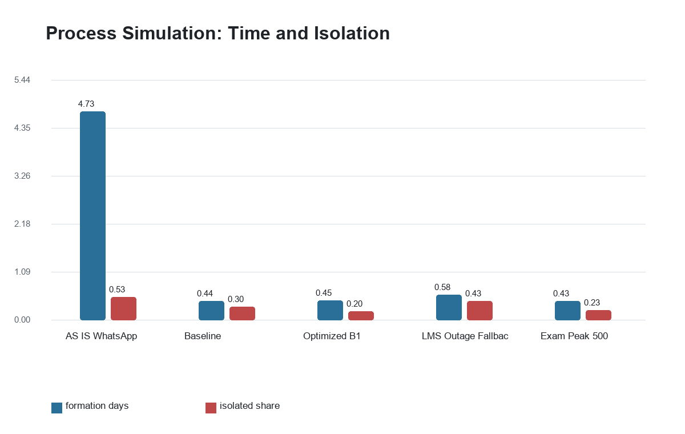
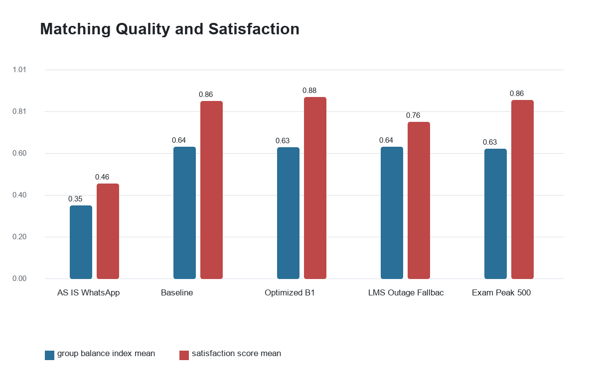
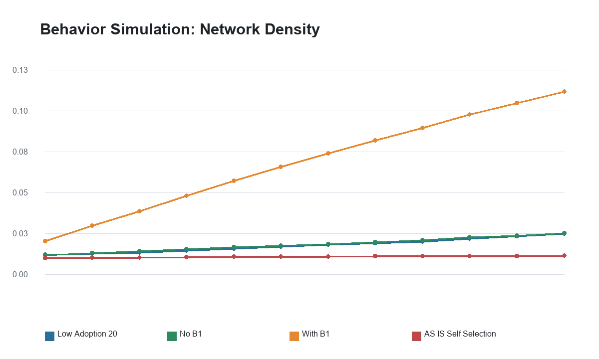
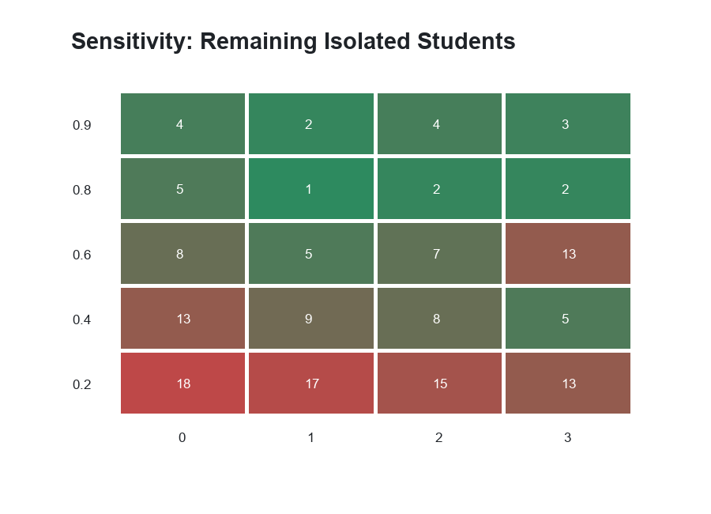

90.5%formation time reduction
1.26sp95 latency at 500 students
0.88optimized satisfaction
5isolated students with B1




Process Summary
| scenario | cohort_size | success_rate_mean | median_formation_days | p95_matching_latency_seconds | isolated_students_mean | group_balance_index_mean | satisfaction_score_mean |
|---|---|---|---|---|---|---|---|
| AS_IS_WhatsApp | 200.0 | 0.471458 | 4.730946 | NaN | 105.708333 | 0.352469 | 0.458512 |
| ACN_Baseline | 200.0 | 0.961040 | 0.440188 | 0.264747 | 61.000000 | 0.636061 | 0.857183 |
| ACN_Optimized_B1 | 200.0 | 0.981770 | 0.449638 | 0.205252 | 39.416667 | 0.633461 | 0.875481 |
| ACN_LMS_Outage_Fallback | 200.0 | 0.789412 | 0.576489 | 0.311900 | 85.833333 | 0.635457 | 0.755763 |
| ACN_Exam_Peak_500 | 500.0 | 0.982892 | 0.428929 | 1.256529 | 114.583333 | 0.627257 | 0.861403 |
Behavior Summary
| scenario | week | adoption_rate | density | isolated_students | degree_gini | giant_component_share | mean_satisfaction | group_balance_index |
|---|---|---|---|---|---|---|---|---|
| AS_IS_Self_Selection | 12 | 0.000 | 0.011809 | 29 | 0.400766 | 0.820 | 0.445442 | 0.973379 |
| ACN_No_B1 | 12 | 0.505 | 0.026030 | 7 | 0.428098 | 0.965 | 0.628457 | 0.618111 |
| ACN_With_B1 | 12 | 0.870 | 0.116080 | 5 | 0.192937 | 0.975 | 0.786466 | 0.655926 |
| ACN_Low_Adoption_20 | 12 | 0.370 | 0.025779 | 11 | 0.473236 | 0.935 | 0.621850 | 0.634828 |